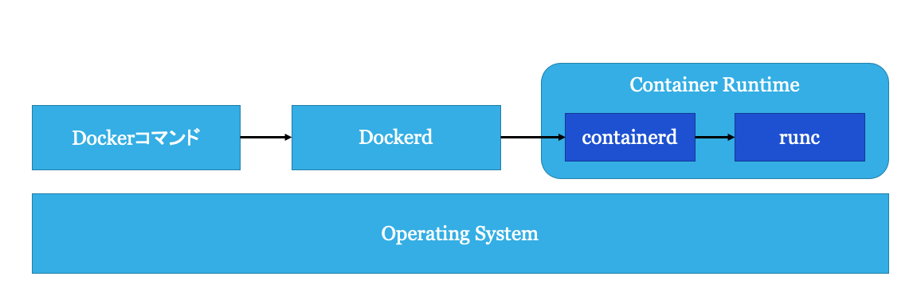

Docker
Agenda
話すこと
- Docker自体の説明
- Dockerの基本的な使い方
話さないこと
- Dockerの環境構築
- Docker Desktopなどの使い方
1. Dockerとは
Dockerとはコンテナ型仮想化ソフトウェアである． Dockerは，コンテナの起動(Run)，コンテナイメージの作成(Build)，コンテナイメージの公開(Share)などの機能を持つ． 現在最も普及しているコンテナ型仮想化ソフトウェアであり，Amazon Web Service(AWS)のElastic Container Service(ECS)のようなコンテナプラットフォームや，開発者の開発環境など広く使われている． Dockerはコンテナの中でもアプリケーションコンテナを扱う． アプリケーションコンテナのことをDocker, Inc. は「A standardized unit of software (ソフトウェアの標準化された単位)」だと表現している[1]． これは，コンテナとはコードと依存関係をパッケージ化したスタンドアロンなコンピューティング環境であり，高い可搬性(Portability)を持つということを指す． 要はDockerが入っているLinuxディストリビューションであればCentOSでもUbuntuでも同じコンテナイメージを用いてシステムを構築することができるというものである．
Dockerのアーキテクチャ

Dockerは大きく分けて3つの要素から構成される．
dockerコマンド: Dockerの操作を行うためのCLI- Dockerd: Dockerの操作を行うためのAPIを提供する
- Container Runtime: コンテナの実行や状態管理を行うシステム